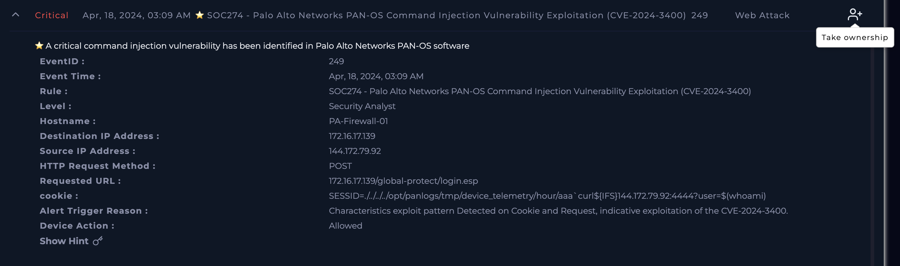
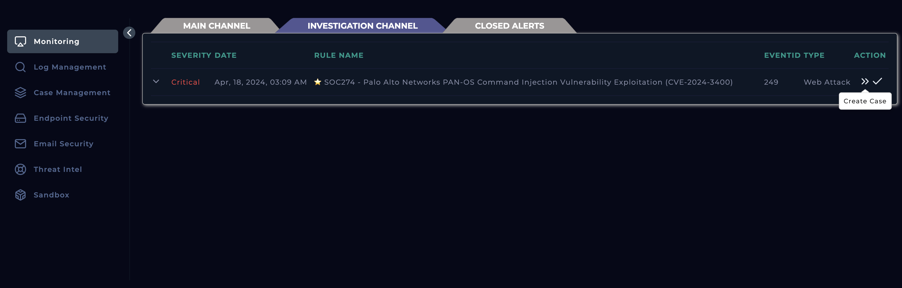
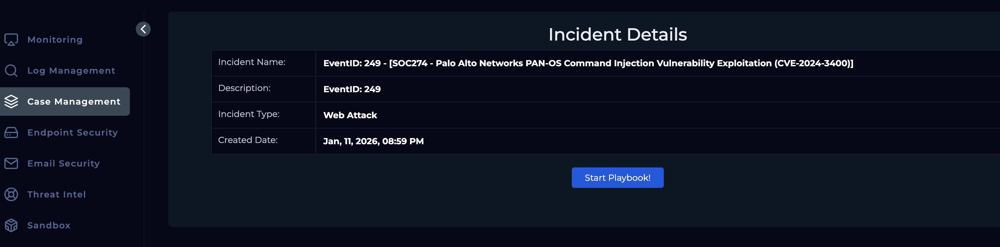
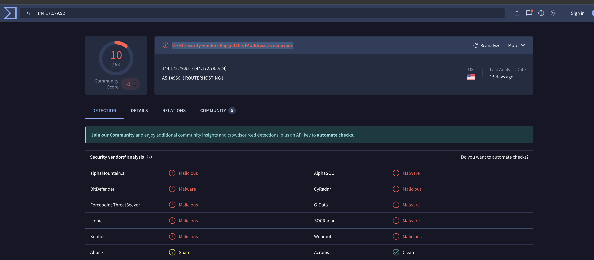
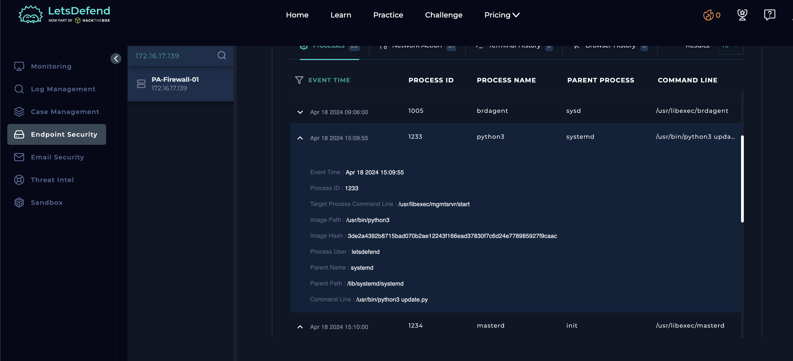

Objective
Determine whether the alert SOC274 represents a successful exploitation attempt of the Palo Alto Networks PAN-OS command injection vulnerability (CVE-2024-3400) against the firewall device PA-Firewall-01 . Specifically, the investigation aims to validate the malicious nature of the observed HTTP POST request, analyze the injected command pattern within the request cookie, and assess whether unauthorized command execution or outbound communication was achieved. Additionally, the investigation seeks to identify the scope and impact of the activity, including any potential compromise of the firewall, data exposure, or lateral risk to internal systems, and to determine whether immediate containment, remediation, or patching actions are required.
Investigation steps
Reviewed the high level details of alert SOC274 and took ownership of the case for further investigation to be carried out.
Date and Time: Apr, 18, 2024, 03:09 AM
Host name: PA-Firewall-01
Destination IP Address: 172.16.17.139Source IP Address: 144.172.79.92
HTTP Request Method : POSTRequested URL : 172.16.17.139/global-protect/login.esp
Alert Trigger Reason: Characteristics exploit pattern Detected on Cookie and Request, indicative exploitation of the CVE-2024-3400.
Device Action: Allowed

The alert is transferred into the Investigation Channel, where I created the Case to follow playbook and mark whether this alert if a true or false positive.

Initiated the playbook to follow a structured procedure in investigating the alert

Carried out some background research based on the CVE the alert was corresponding to using NVD (National Vulnerability Database), where I was able to the understand the following:
CVE-2024-3400 is a critical command injection vulnerability in the GlobalProtect feature of Palo Alto Networks PAN-OS software, rated CVSS 10.0/Critical. It affects specific PAN-OS versions (10.2, 11.0, and 11.1) when GlobalProtect gateway or portal configurations are enabled.
At its core, this vulnerability stems from arbitrary file creation followed by improper input validation, which leads to arbitrary command execution with root privileges on the firewall. An unauthenticated remote attacker can send a crafted HTTP request to the GlobalProtect service and exploit the flaw to execute OS-level commands without valid credentials.
Headed into the Log Management module and filtered by the source IP address resulting in a single record. The log shows malicious payload embedded inside the HTTP cookie (SESSID), which is a known exploitation technique for this vulnerability. The payload includes directory traversal (../../../../) to reach a writable system path on the firewall and injects a shell command using backticks. The injected command executes curl to initiate an outbound connection to the attacker-controlled IP address 144.172.79.92 on port 4444, appending the output of $(whoami) to confirm command execution and identify the privilege context (typically root in successful PAN-OS exploitation).


Navigated to Virus Total and searched for the source IP address. The results showed 10/93 security vendors flagged this IP address as malicious.

Checked the Endpoint Security module, filtering on the destination IP address from the alert. There was on network action from the source IP address on the 18/04. Within the process tab, identified a suspicious process that was ran on 18/04 with a name of Python3 which falls into indications of CVE-2024-3400 where; commands are executed as root, drop or execute Python-based payloads, and abuse existing system services to blend in. Having closely looked at this by searching the image hash in Virus Total, 34/60 security vendors flagged this as malicious and this hash was given a common threat category of trojan.



No notification found in the Email module indicating this is an expected target test.

As now I have confirmed the endpoint has been infected, the device must be contained through the Endpoint Security module to prevent any malware from spreading to other connected systems and to secure the device for effective forensic analysis and remediation.

Analysis
The alert detailed a suspicious HTTP POST request to the GlobalProtect login endpoint on PA-Firewall-01, originating from an external IP address (144.172.79.92) and containing exploit characteristics associated with CVE-2024-3400. Background research conducted via the National Vulnerability Database confirmed that CVE-2024-3400 is a critical (CVSS 10.0) unauthenticated command injection vulnerability affecting Palo Alto Networks PAN-OS GlobalProtect services. The vulnerability allows attackers to exploit improper input validation to achieve root-level command execution on vulnerable firewall devices, making any matching exploit indicators high risk.
Log analysis within the Log Management module provided strong evidence of active exploitation. The HTTP request contained a malicious payload embedded in the SESSID cookie, leveraging directory traversal and shell command injection syntax consistent with known CVE-2024-3400 attack patterns. The injected command attempted to execute curl to establish an outbound connection to the attacker-controlled IP address on port 4444 while appending the output of $(whoami) to confirm successful execution and privilege level. Reputation checks of the source IP address in VirusTotal further supported malicious intent, with multiple vendors flagging it as malicious. Endpoint Security analysis revealed a suspicious python3 process executed on the same date, aligning with post-exploitation behavior commonly associated with this vulnerability, such as executing Python-based payloads and abusing legitimate system services for stealth. VirusTotal analysis of the associated image hash showed a high detection rate and classified it as a trojan, reinforcing the likelihood of compromise. With no indication of authorized testing and clear signs of successful exploitation and malicious execution, the alert was classified as a true positive, and immediate containment of the affected firewall was initiated to prevent further spread and enable forensic analysis and remediation. As the attack was successful, the case is to be escalated to tier 2 for further investigation and disinfect the contained device.
Key learnings
- This investigation highlighted the critical importance of rapidly validating high-severity infrastructure alerts, particularly those associated with actively exploited vulnerabilities such as CVE-2024-3400. Early CVE research was essential in understanding the full impact of the alert, as it confirmed that unauthenticated attackers could achieve root-level command execution on firewall devices. This reinforced the need to treat exploit indicators targeting perimeter security devices as high-confidence threats, even when only a single log entry is observed. The case also demonstrated the value of deep log inspection, as analyzing the HTTP cookie revealed a clear command injection payload that would have been easy to overlook without careful scrutiny of request parameters.
- From a detection and response perspective, the investigation emphasized the importance of correlating network, endpoint, and threat intelligence data to confirm compromise. Identifying post-exploitation behavior on the endpoint, such as suspicious Python process execution and malicious hash reputation, helped bridge the gap between exploitation attempts and successful execution. Additionally, reputation checks on external IP addresses and binaries strengthened confidence in classification and reduced uncertainty. Ultimately, this case reinforced the necessity of prompt containment once compromise is confirmed, especially for security infrastructure assets, to prevent further attacker activity and preserve systems for forensic analysis and remediation.